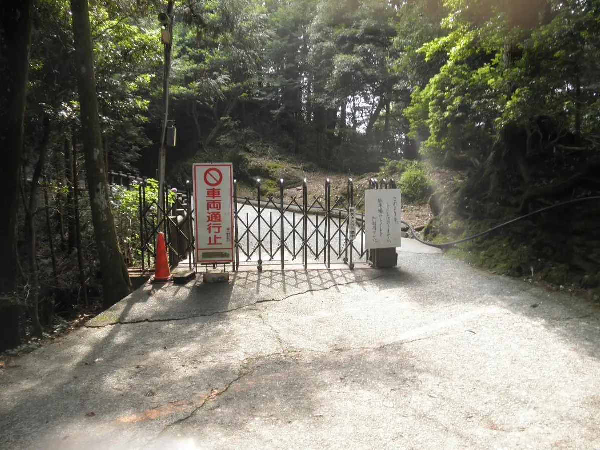

Japan / Tokushima / Katsuura
Katsuura, Tokushima: things to do, food and stays
Katsuura · Tokushima
Katsuura
Highlighted on the Tokushima map.

Stay
No bookable places to stay found in Katsuura — nearest options in Naka Town.
Explore Katsuura, Tokushima: things to do, food and stays